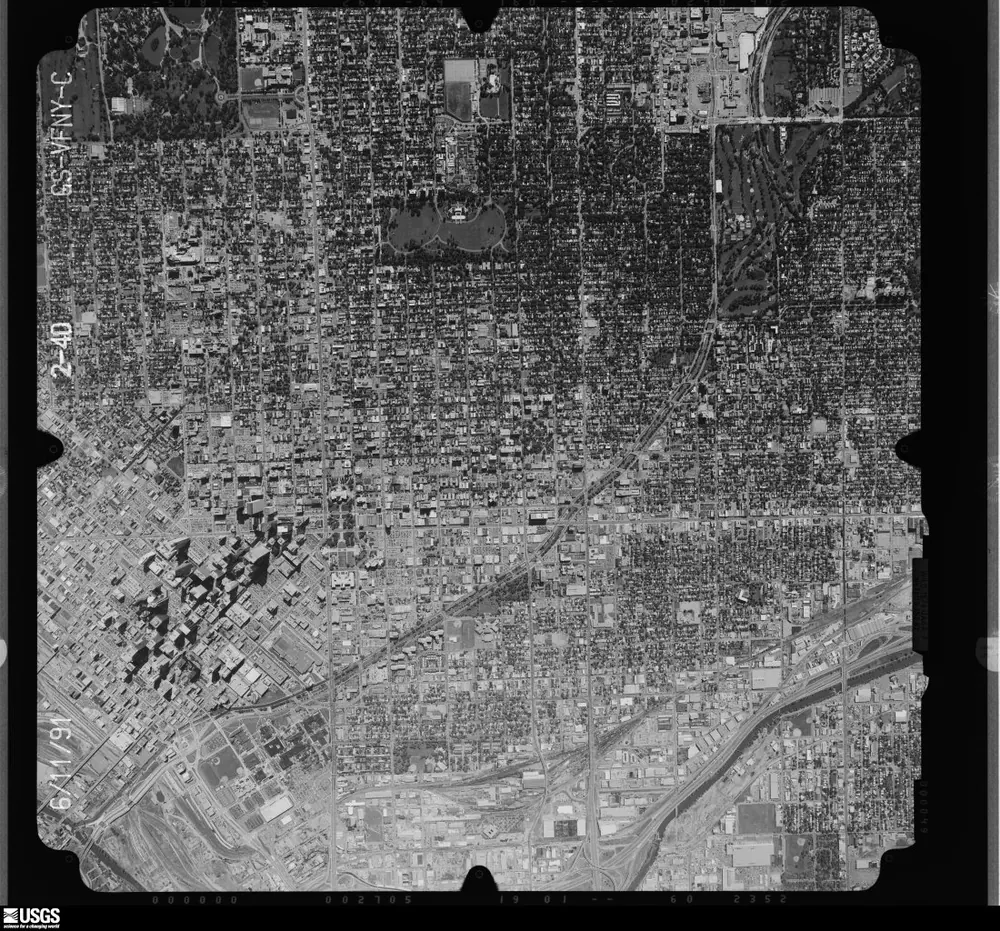
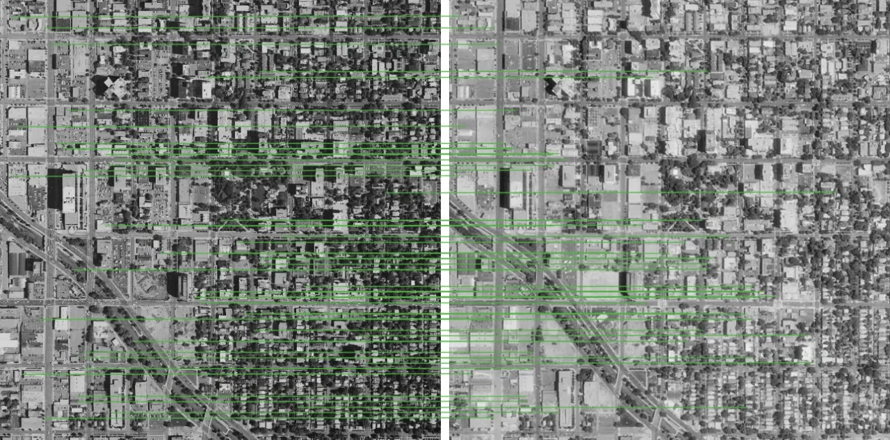
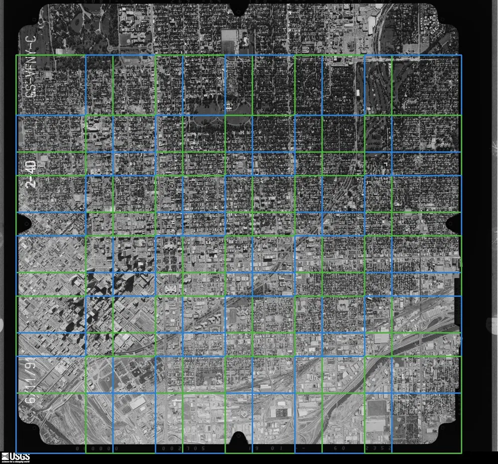
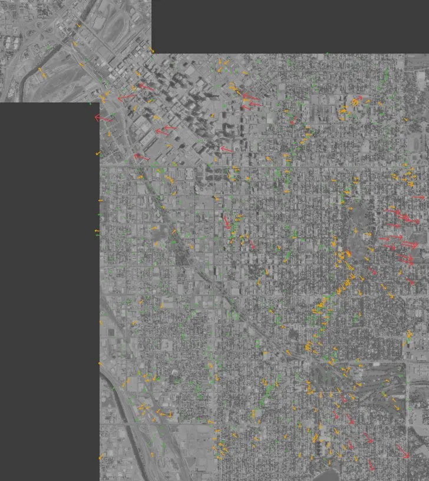
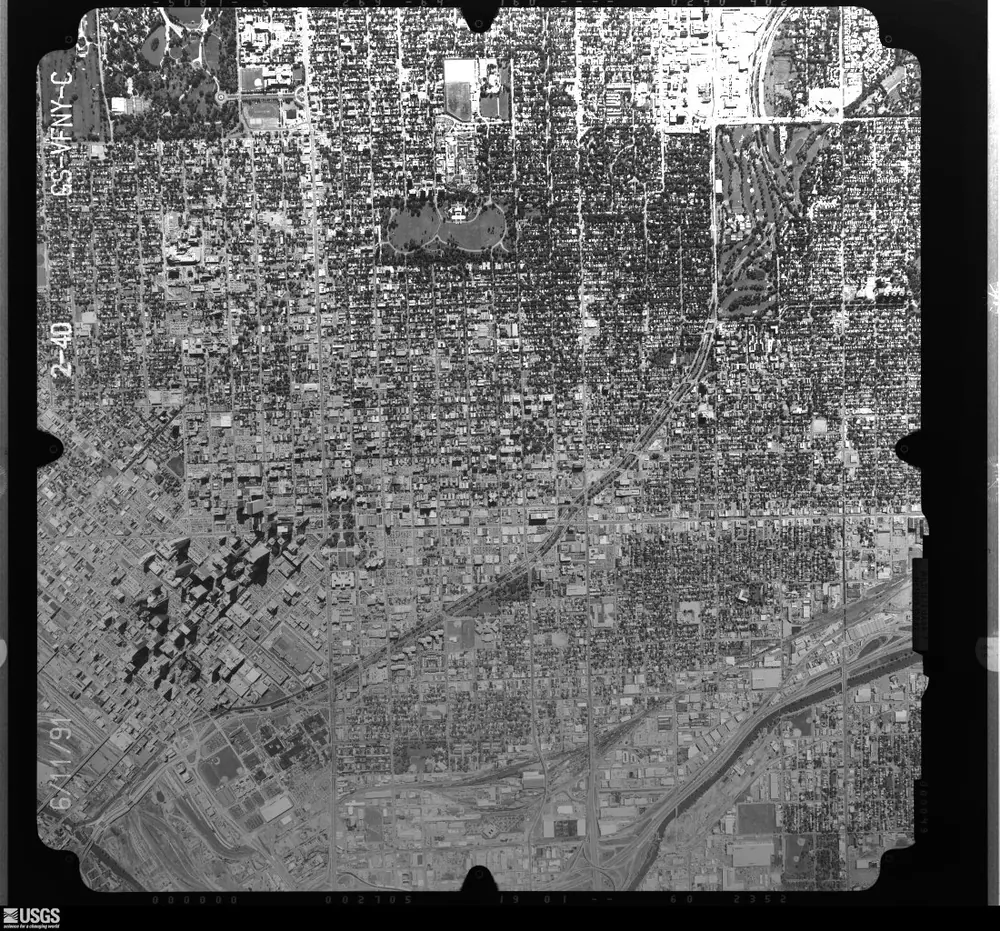
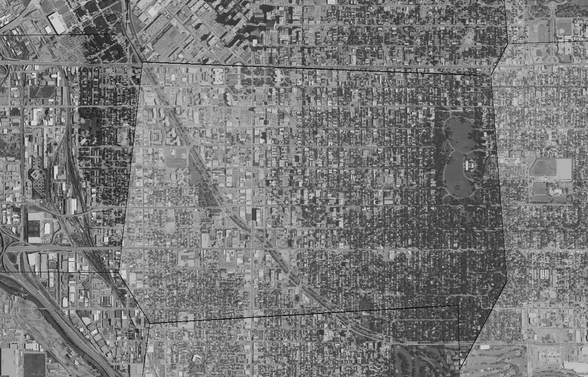

How the old photographs were placed
The years from 1939 to 1991 on Denver Aerials are 1,109 photographs taken from aeroplanes and scanned by the U.S. Geological Survey. A scan is a picture, not a map: USGS says its scanned frames are not georectified. This page says how each one was put on the map, and how far off it is.
In short
Software finds thousands of spots that an old photograph shares with a newer one that is already on the map, and bends the old photograph until those spots line up. Half of the spots are kept back and used only to check the result. That check is the number beside each year: 1.9 m held out means that in 1991's middle photograph, a spot is typically 1.9 metres (about 6 feet) from where it should be, measured at points the fit never saw.
Nothing in a picture is invented. Every pixel comes from the scan, moved into place and evened in brightness. Where no photograph covers the ground, the map shows none.
One photograph, step by step
Frame AR1VFNYC0020040, flown 11 June 1991 at a scale of 1:24,000, over downtown and Capitol Hill.
1The scan
The scan as it comes from USGS EarthExplorer: 10,601 by 9,872 pixels, each about 0.57 m of ground, with the black film edge and its printed labels still on it. USGS records roughly where the frame's corners are; this one's record was about 500 m off.

2Match it to a year already on the map
The frame is cut into 36 windows. In each, a published matcher, LoFTR, finds the same ground in the old photograph and in a newer picture that is already on coordinates. Roofs, trees and cars change over the years; streets, railways and field lines carry the match. Nobody picks points by hand. For the few frames it could not match, a second matcher, LightGlue, was tried. A frame needs at least 150 agreeing spots in at least 12 windows, or it is not placed.

3Bend it to fit
The frame is bent onto the map so the matched spots line up (georeferencing), with a flat tilt (a homography) or a tilt plus a gentle curve, whichever does better on the check below.
4Check it on points it never saw
The windows are split like a checkerboard. The fit uses one colour; the other colour only measures how far off the result lands (held-out testing). For this frame the middle miss is 1.4 m, and nine in ten are under 3.5 m. A frame that misses by more than 8 m is left off the map: a gap is better than a photograph in the wrong place.


Left: the windows, fitted on one colour and checked on the other. Right: each arrow is one check point's miss, drawn 15 times longer than real; green is under 3 m, orange 3 to 6 m, red over 6 m. The red arrows downtown are tall buildings, which lean away from the camera.
5Even out the light
Old aerial cameras record a darker edge than middle (vignetting), and the sun brightens one side. Each frame's own smooth falloff is measured and divided out, then every frame of a year is set to the same middle brightness. Nothing is sharpened.

6Join the year
Where photographs overlap, each spot of ground is taken from the photograph whose centre is nearest, because a photograph leans least at its centre. The joined year is cut into map tiles.

Newest to oldest
A 1953 photograph matched straight against today fails at the city's edge, which was farmland then. So the years were placed newest first. 1991 was matched to USGS's own orthophotos of 1993 to 1999, which USGS had already put on coordinates, and each older year to the years placed before it. Every year traces back to public USGS pictures, and to no commercial map.
Every year's numbers
| Year | Held out | Placed | Flown |
|---|---|---|---|
| 1991 | 1.9 m | 75 of 75 | 11 June 1991 |
| 1988 | 2.7 m | 76 of 76 | July to September 1988 |
| 1984 | 3.2 m | 26 of 26 | 13 October 1984 |
| 1983 | 4.2 m | 19 of 20 | 5 October 1983 |
| 1980 | 3.3 m | 19 of 19 | June and July 1980 |
| 1979 | 4.3 m | 2 of 2 | 29 August 1979 |
| 1978 | 2.8 m | 88 of 88 | July to September 1978 |
| 1975 | 4.0 m | 28 of 28 | February to July 1975 |
| 1972 | 3.4 m | 111 of 111 | June to October 1972 |
| 1971 | 2.6 m | 141 of 141 | August to October 1971 |
| 1970 | 3.6 m | 119 of 120 | February to November 1970 |
| 1969 | 3.3 m | 44 of 46 | 1 to 4 August 1969 |
| 1964 | 2.3 m | 161 of 161 | October and November 1964 |
| 1963 | 2.3 m | 159 of 159 | 13 to 18 May 1963 |
| 1953 | 3.6 m | 25 of 25 | September 1953 |
| 1939 | 2.7 m | 16 of 16 | 21 March 1939 |
Held out is the miss at the year's middle photograph; placed is photographs on the map of those USGS has over the area. 1,109 of 1,113 are on the map. Three could not be placed and one missed by more than 8 m. Flight dates are the dates USGS records for the frames. 1993–94, 1999 and 2002 are not in this table: USGS publishes those already on coordinates, and they are shown as published.
Where it is weak
- Hills. A flat tilt plus a curve cannot follow real relief, and the foothills on the west edge are where that would show. A published method that rebuilds the ground in 3D, HSfM, is the step up.
- Tall buildings lean away from the camera, so a tower's roof is not over its base.
- Where two photographs meet, they can disagree by 4 m or more, so a street can step slightly at a join. The number beside a year is measured inside one photograph, not across joins.
- Brightness steps between flight lines, most of all in 1939, whose scans are prints laid side by side.
- Blurry years. Some years exist only as coarse scans (1988 at about 3.5 m a pixel). They are placed and shown, each with its own number, behind Show blurry years in the year list. They were never used to place another year.
What it does not do
- No sharpening, no added colour, no detail made up by software.
- No filling of gaps from another year.
- No change to USGS's files: the work is done on copies.